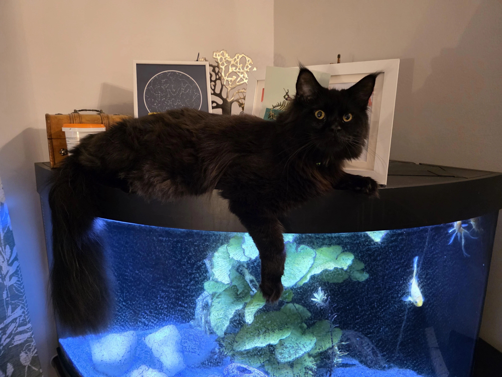

// uid: 0x99238 // node: local
01. obsidiana orgánica

el pelaje de un maine coon negro actúa como un disipador térmico biológico. su densidad es superior a la media de la especie, permitiendo una estabilidad de temperatura constante en entornos de trabajo. análisis de textura: grado 9/10.
| longitud pelaje | 12-15 cm |
| densidad pigmento | 98% absorbente |
| temperamento | nula interferencia |
[08:00] system_check: integrity_ok
[08:05] sensor_data: activity_detected_near_north_sector
[08:12] log_entry: cat_requested_access_to_keyboard
[08:05] sensor_data: activity_detected_near_north_sector
[08:12] log_entry: cat_requested_access_to_keyboard